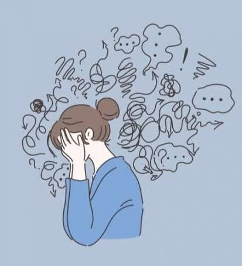
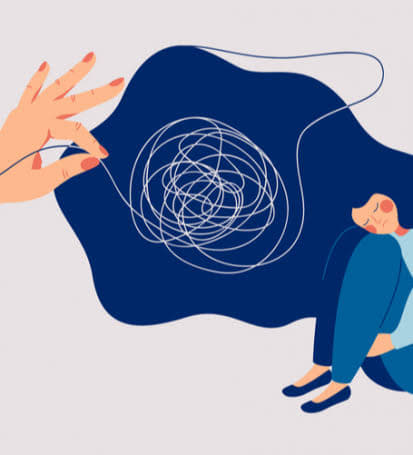

La ansiedad es un aspecto normal del estado emocional de los seres humanos, en el cual existe un alto grado de actividad del sistema periférico. Este estado emocional está ampliamente relacionado con el sentido de supervivencia, tal como lo son el miedo, la ira, la tristeza y la felicidad. La palabra ansiedad proviene del latín anxietas que traduce a un estado de angustia o aflicción que puede sufrir una persona sin necesidad de existir motivo alguno para tener realmente una preocupación o estrés que conlleve a la pérdida de control o sensación de no tener solución al problema presentado.
Existen síntomas de diversos tipos cuando estamos en presencia de problemas de manejo de la ansiedad, dentro de éstos podemos destacar los siguientes:
Sensación de amenaza y peligro, agobio, inquietud, inseguridad en sí mismo y con los demás, temor a perder el control, recelos y aumento en las sospechas e incertidumbre. Físicos: Sudoración, nauseas, vómitos, falta de aire, temblores, tensión, rigidez muscular y más graves como insomnio, trastornos de alimentación y disfunción sexual.
Preocupación excesiva, expectativas negativas, sensación de confusión, dificultad de atención, concentración y memoria, abuso de prevención y sospecha así como susceptible.
Irritabilidad, dificultad para mantener conversaciones con las personas, bloqueos, temor excesivo a enfrentar posibles conflictos.
Rigidez, dificultad para actuar, impulsividad, alerta e hipervigilancia, movimientos torpes de manos y brazos, cambio de voz, tensión en las mandíbulas, dudas o crispación.